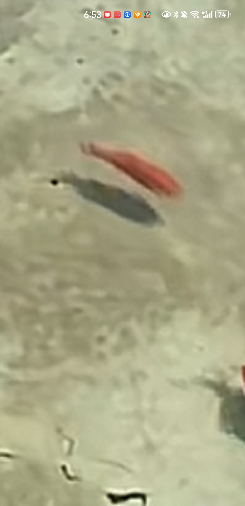

大金空调是真的好，用了十三年了[赞][赞][赞]希望雷军制造出大金质量的好空调，把价格打下来
看来内娱是真没想过翻拍水浒传啊[黑脸][黑脸][黑脸]
除了石头，其他……为啥都一个样
这么看还是石头帅得正常一点
我觉得郭涛儿子最有记忆力呢[捂脸]
我是不会放弃听到这首歌现场版的[流泪][流泪]
汪苏泷唱几秒，心理老师一个小时又白干[微笑]
国内的兽药都不敢用这个剂量，所以好多人说外国药效果好，见效快[泪奔]
🌺⬛⬛🌼💐
❕ ⌓ ⌓
❕ 👄 💅🏻
永璜刚过世，本宫不想耀眼夺目的
报告张教官，蓝啵王不请你吃饭就算了，他还顺了你的半个柑子[尬笑][尬笑][尬笑][尬笑]

蓝啵王:只要你在四川我就逮你
谁让你坑花姐悬崖喝咖啡，我预言很准的，每次坑完花姐，成都消防必出现。
我有个问题，为啥张教官到哪里都能找到他，是定位了吗[捂脸][捂脸][捂脸]
成都消防，听说你们隔壁重庆消防车被偷了是真的吗？[偷笑]
张教官太牛了，真心地牛 上天入地下水无所不能，嘎嘎地 成都消防离了你，科目都练不成喽
张教官检查一下手机是不是被成都消防安了跟踪器[呲牙]每次都能精准找到你
重庆消防，毕竟他们最近火，但是要注意到车。
张教官你炸了成都消防的厕所吗，天天扭到你废哦
小舅子被成都消防收编了，现在安排在张教官身边的定时炸弹[捂脸][捂脸]
哥，拿着这个视频，整个城市的消防队都吃一遍，反正又没说是哪个消防队的[泪奔][泪奔][泪奔][泪奔]
拿出视频，一个一个消防队问，你说这消防队欠我几顿饭[大笑][大笑][大笑]
当代网友的回复是[赞]
《你还知道这是猫窝啊》 笑的小女子不才了哈哈哈哈哈哈哈哈哈
在一个无人在意的角落，一条金鱼被水哄睡着了[黑脸]
哇以后春天就这样好美丽
鱼：倒是给我供氧啊[微笑][微笑][微笑]
有的老铁，包有的[捂脸][赞]
鱼:你说你把我放在了一个全是猫的中间的池塘里吗？ 
姐姐你好，这只猫长得真的很像我家丢失的小猫[泣不成声][泣不成声]他叫豆豆是男孩子没绝育，他右边牙齿断了应该没长上你可以帮我看看是不是他吗如果是他我可以去把他接回来[泣不成声][泣不成声]谢谢您了黑白渐变的小猫[泣不成声][泣不成声]
猫粮别弄太多了，不然吃不完晚上招老鼠
好笑吗？我只看到了一群绝望的鱼[黑脸]
在猫猫的视角里面，这和猫界女娲有什么区别[黑脸][强壮]
这真不是引流的[流泪] 姐姐这个地方是我老家亲戚家的民宿 应该是租下来或者是买下来 专门给流浪猫住的 我新年期间路过了 但是不能进去
姐姐，我老家有个老太太收养了将近200多流浪猫狗，猫能有50多只，现在她岁数大了，身体也不好，实在养不了了，儿女因为这是都不管她了，你看看能帮帮忙么，要不就要放养了，我可以出车，不方便也没事，你那也属实多，
1200万应届生过剩！ 900万新生儿稀缺[看][看]
晚上12点给大爷发个短信
纯玻璃 -白海波
老白总是伤敌一千自损八百，对方不信邪还把自己气够呛，还得看范老师，在对方稍微有点放松的时候就心平气和的来一句:新的，毫无争议的新[看]
范：新的，纯新的，毫无争议新的 白：老东西 国宝帮：还是白老师识货 白：我说的是你
范老师才是大师，得到了大爷的认可[不失礼貌的微笑]
白海波：“老玻璃” 国宝帮：“你才是老玻璃！你和范海洋那点事别以为大伙不知道！”
还是得范老师上，层层递进，持续暴击[大笑] “新的” “纯新的” “毫无争议的新”
玻璃确实有用药价值，可以用来装药
14岁性同意18岁防沉迷
不明白是谁设定的这个年龄 我女儿刚上高一09年8月的 就因为年龄这里没有胜诉

性同意应该改成二十岁吧，感觉先适应两年成年之后再性同意更好，毕竟确实我十八岁的时候还觉得自己很小[黑脸]
还差一年才可以玩抖音小游戏，结果孩子已经三岁了[憨笑]
古代都要满15啊[憨笑]
纵使是古代，及笄也要15，14岁有的女生月经都没来吧[憨笑]把我们女生当日本人整呢
打游戏要18岁，约只要14岁，要干什么我们还不清楚吗，这么多年都没改，现在才拉出来鞭策，以前干嘛去了[捂脸]
怎的？我玩个抖音小游戏还得满18呢[憨笑][强壮]
兄弟萌来看看
问过女性意见嘛[九转大肠]
到时候爸爸妈妈孩子加一起还没我鞋码大[捂脸]
最低也要16岁吧[流泪]14岁真的好小好小，心智都没成熟的孩子就让她被迫承受这些东西[流泪]
只要我不饿死，我也要亲力亲为照顾我的父母，父亲病了两年了，我一个人忙前忙后，连请护工我都不敢请，因为我父亲这两年对我依赖很大，一下没有见到我，他就慌
哪个养老院，说出来，我要进去养老，打护工
我外婆今年100岁了，在她80岁的时候所有人都要送她去养老院，只有我义无反顾的接回家照顾，只因她是妈妈的妈妈。
原来川渝人如此有文化底蕴[比心]爱了
云贵川渝从小就是古风小生[送心]
本四川人笑了，这不是方言吗，怎么还真有字啊[捂脸]
长了这么大终于看到这几个字了，我以为只是方言，没想到还有字
相信我，《我的父亲是瓦匠》才是永远的经典。尤其前三秒的前奏，世界级。
其实你并不爱我 只是觉得我好骗 比外面干净而且能解你的需求
校长也觉得那颗七号不应该打丟
两广总督薛珍麒[流泪]
加入的门派太多了，不敢练，怕走火入魔了[泪奔]
如果到夏天没效果，你就准备接招吧[捂脸]
多么小众的名词啊[捂脸] 持久闪电战[暗中观察]
德国：这把我蓝开，米兰 中国：这把我红开，霓虹
666，S1我只是个种地的，S2不要枪我的地，S3我看这像我的地
快点扩充板块吧，大学生已经找不到工作了
马上长天上去了[泪奔]
Read more: